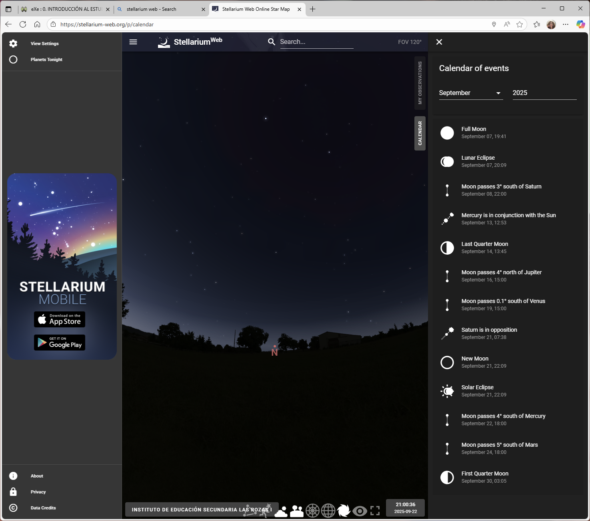
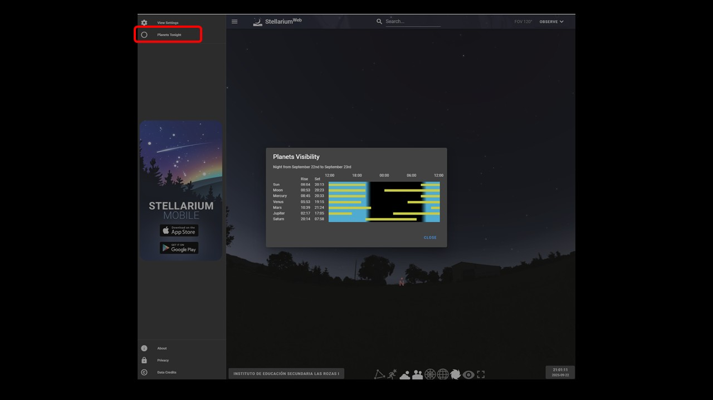
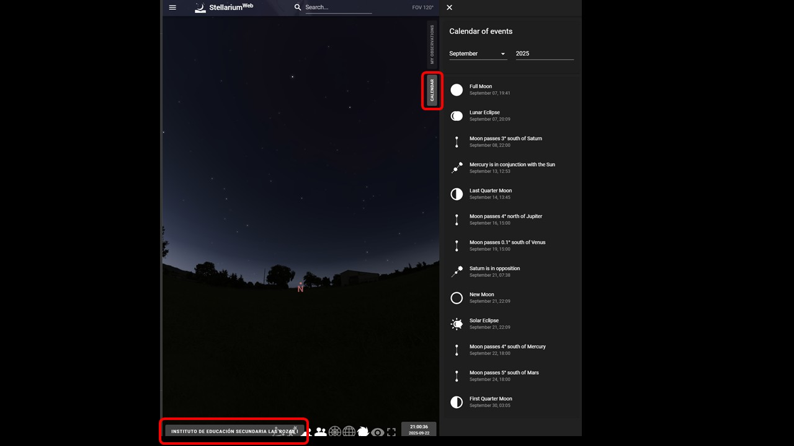

| PASO 1 |
ACCEDE A STELLARIUM:
|
 |
| PASO 2 |
|
 |
| PASO 3 |
|
 |
PREGUNTAS:
- ¿A qué hora salió la Luna hoy? ¿Debería ser visible a la vez que el Sol o no?
- ¿Qué planeta salió cuando salió la Luna?- si hubiera alguno
- ¿Qué planeta salió cuando salió el Sol? - si hubiera alguno
- ¿Qué planeta sólo lo podías ver de noche, según la planificación?- si hubiera alguno
- ¿Entre qué fases se encuentra la Luna en el día/noche de hoy?